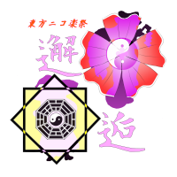

第５回東方ニコ楽祭・邂逅
開催概要
＜企画名称＞：東方ニコ楽祭・邂逅
＜企画内容＞：東方自作アレンジ・西方自作アレンジ・東方風自作曲 の動画投稿祭（今回もイラスト参加、歌詠み参加を実施します）
＜開催期間＞：2020年5月15日（金）午後9時～5月17日（日）午後9時
＜参加方法＞：期間内に動画を投稿して、投稿した動画に「東方」、「東方ニコ楽祭・邂逅」と「東方自作アレンジ」、「西方自作アレンジ」、「東方風自作曲リンク」の内の該当するタグをロックする。
＜企画趣旨＞：さまざまな出会いがある春、その巡り合わせ、小さな奇跡を共に楽しみませんか♪
新企画 大喜利
セリフ吹き出し付きイラストを投稿し、それを見た人がおもしろおかしい一言コメントを考えて静画コメント欄へハンドルネームと一緒にコメントします。
投稿されたイラストやコメントは運営により、動画やTwitterなど様々な場所で紹介される場合があります。
詳細説明は主催者ブロマガにて
同時開催企画 『東方ニコ遊祭・春風』
東方Projectの二次創作自作ゲームのコミュニティ『東方クリエイターズ』様主催の企画。
東方ニコ遊祭は「制作ゲームの、紹介や宣伝をする作品の投稿」がメインになります。
ニコニコの各サービスを利用して発表していく形式を取ります。（動画、静画、ブロマガ、ツクールなど）
詳細はコチラ（『東方クリエイターズ』様ＨＰ）
同時開催企画 『マイクリレー企画』
快晴雄正様主催の企画。
東方アレンジのトラックで マイクリレーをしよう！ という企画になります 。
参加表明の期限は4/10で、音源提出期限は4月下旬頃の予定。
詳細はコチラ
申込み申請先→TwitterDMにて快晴雄正(Twitter@NohinoOrnitier) まで
告知動画
|